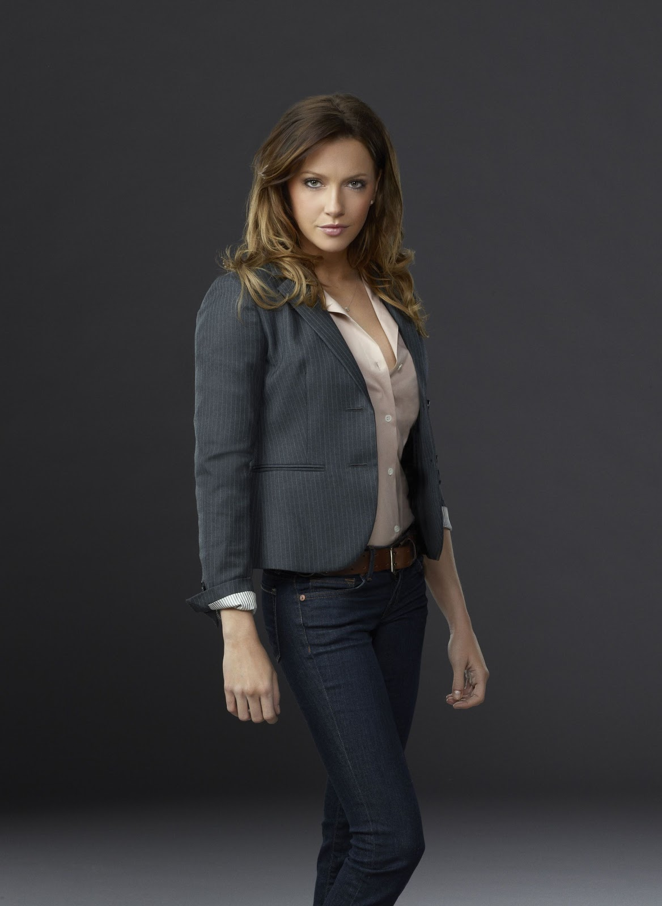
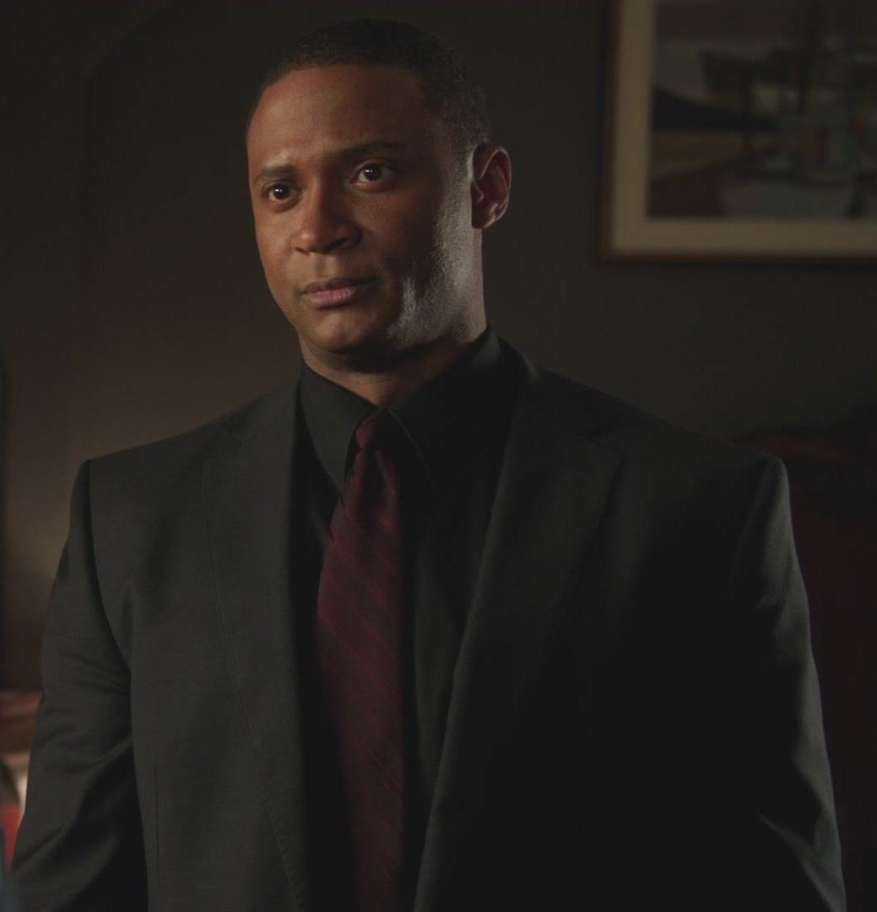
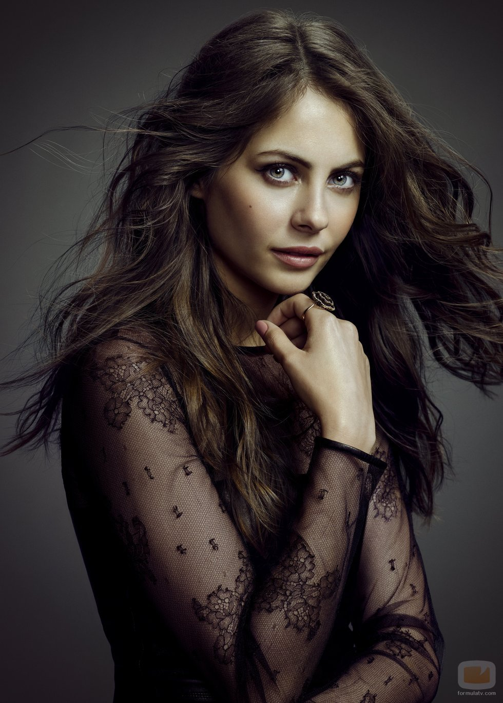
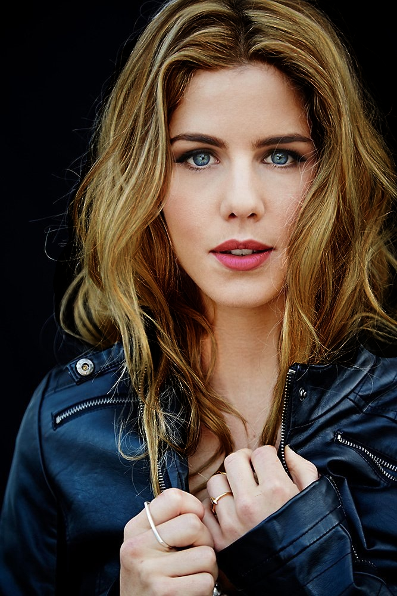
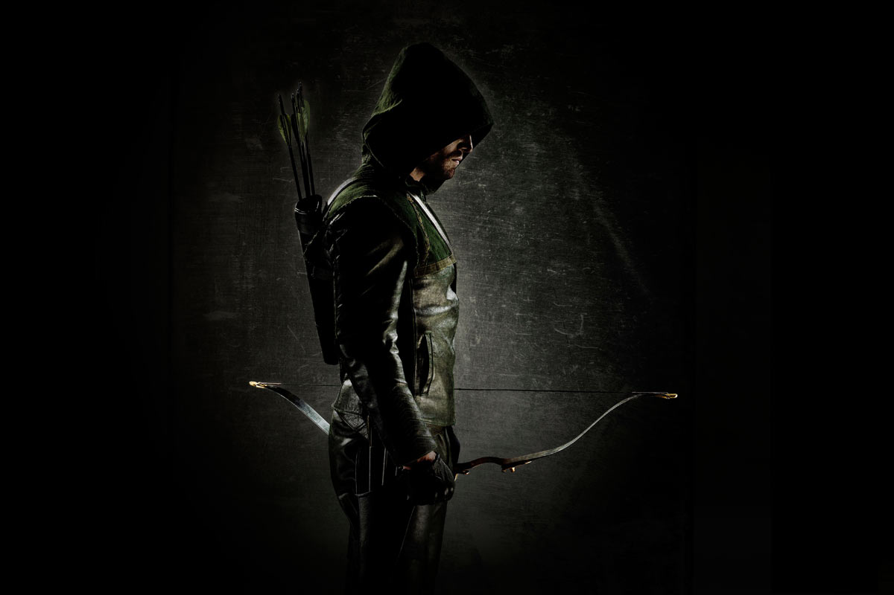

Oliver Queen

a billionaire playboy turned hooded vigilante-hero formerly known as the "Hood", "Vigilante", and "Arrow", before using "Green Arrow". He is based on the DC Comics character Green Arrow. After surviving a ship wreck on an isolated island for five years, Oliver returns to his home city with a mission to right the wrongs of his father and save the city from the crime that has grown in his absence
Laurel Lance
Based on the DC Comics character Black Canary, an attorney turned vigilante and former girlfriend of Oliver Queen. Like Oliver, Laurel fights for the people of Starling City.
John Diggle
Oliver's partner, confidant, and bodyguard. Diggle is ex-military, and works to have Oliver channel his abilities into helping others in the city, and not just taking down the wealthy, corrupt businessmen that worked with Oliver's father.
Thea Queen
Oliver's younger sister. Thea develops a drug habit early in season one, but gets clean after criminal charges are brought against her for driving while under the influence. In season two, she learns that Malcolm Merlyn is her biological father, and begins training with him at the start of season three.
Felicity Smoak
The IT technician at Queen Consolidated who has become part of Oliver's vigilante team. The DC Comics character of the same name was the step-mother of Ronnie Raymond and manager of a computer software company. Like Diggle, Felicity also serves as Oliver's friend and confidant.
The series follows Oliver Queen (Stephen Amell), billionaire playboy of Starling City, who spends five years shipwrecked on a mysterious island. Upon his return to Starling City, he is reunited with his mother, Moira Queen (Susanna Thompson), his sister, Thea Queen (Willa Holland), and his friend, Tommy Merlyn (Colin Donnell). The first season focuses on Oliver rekindling his relationships and spending his nights hunting down and sometimes killing wealthy criminals as a hooded vigilante. He uncovers Malcolm Merlyn's (John Barrowman) conspiracy to destroy "The Glades", a poorer section of the city that has become overridden with crime. John Diggle (David Ramsey) and Felicity Smoak (Emily Bett Rickards) assist Oliver in his crusade. Oliver also reconnects with ex-girlfriend, Laurel Lance (Katie Cassidy), who is still angry over his role in her sister's presumed death. The first season also features flashbacks to Oliver's time on the island, and how it changed him; this continues in subsequent seasons.
In season two, Oliver has vowed to stop crime without killing criminals, and comes under attack from Slade Wilson (Manu Bennett), a man from Oliver's time on the island who resurfaces with a vendetta against him. Oliver must also contend with outside forces attempting to take over Queen Consolidated, guilt from decisions he made in the past, and secrets harbored by his family and friends. Oliver grows to accept aspiring vigilante Roy Harper (Colton Haynes) as his protégé, and begins to receive assistance from Laurel's father, Detective Quentin Lance (Paul Blackthorne). Oliver also gains another ally; a mysterious woman in black, who is eventually revealed to be Laurel's sister, Sara Lance (Caity Lotz), who had survived her ordeal at sea years previously.
In season three, Arrow has become a public hero in Starling City following Slade Wilson's defeat. Queen Consolidated is sold to wealthy businessman, scientist and aspiring hero Ray Palmer (Brandon Routh). Oliver struggles to bring his family back together, an old enemy returns, and Oliver becomes embroiled in a conflict with Ra's al Ghul (Matthew Nable). After a tragic event and a rocky start, Laurel sets out to follow in Sara's footsteps as the Black Canary. John Diggle struggles with his new role as a family man, as Oliver no longer wants John in the field after the birth of his daughter, while Felicity Smoak begins a new career as Vice President of Palmer Technologies (formerly Queen Consolidated).
In season four, Oliver takes on a refined persona as "Green Arrow". He and his allies fight against the terrorist organization H.I.V.E., headed by Damien Darhk (Neal McDonough), who plans to destroy Star City (formerly Starling City). John Diggle is concerned with finding H.I.V.E. and learning the reason for the murder of his brother, Andy. Thea joined the team under the alias "Speedy", but must learn to control herself while fighting, as she now has a blood-lust that may never be fully quenched as a side effect of the Lazarus Pit. Laurel struggles to bring Sara back after learning Thea's resurrection from the Pit. Oliver decides to run for mayor. Despite having found happiness with Felicity (now CEO of Palmer Technologies) and planning to propose to her, Oliver discovers that he is the biological father to a boy he unknowingly conceived ten years previously with a former girlfriend, Samantha Clayton (Anna Hopkins), whose discovery threatens to destabilize his relationship with Felicity, his life as the Green Arrow, and his mayoral campaign.